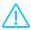

myZyxel
The following terms may help you understand what you need throughout this chapter.
• Register: to add a new device/license that has not been previously registered under your myZyxel account.
• Activate: to enable a license on a device.
Register a New Device
1 Tap Device located in the bottom panel to open the Device Management screen.
2 Tap + located in the upper right corner of the Device Management screen to register a new device.
3 Enter your device’s MAC Address and Serial Number. You can also tap Scan QR code to scan the QR code on your device and automatically enter this information. When your device is found, the device’s information appears in this screen. Select it and tap Next.
Note: If your device is not found, make sure you entered the correct Serial Number and/or MAC address. You can enter the MAC address with/without colons (:).
4 (Optional) Tap the gray box to change your device name. It is recommended you do not leave this field empty; otherwise it will be harder to identify this device later. Tap Next.
5 (Optional) Tap the Name field to enter your vendor’s name. If it’s found myZyxel fills the vendor’s Email and VAT information automatically. Tap Register.
6 A screen saying Registered Successfully appears. Tap OK.
View your Registered Devices
1 The Home screen shows all the devices with expired and/or soon to expire licenses. You can swipe to your left to view these devices and their license status. If all your devices are working well, no devices will display here.
2 To view all devices registered in your myZyxel account tap Device in the bottom panel.
3 The Device Management screen appears. You can view all your devices here.
4 Devices with the Warning icon () appear at the top meaning they have expired licenses or have licenses that are soon to expire. Tap each device to open a screen displaying the device’s information.
Modify a Device’s Information
1 Tap Device located in the bottom panel to open the Device Management screen.
2 Tap the device you want to view.
3 A screen displays showing the device information. Use this screen to view the device’s MAC address and serial number, as well as the licenses activated on this device. To edit this
information, tap the Edit icon (

).
4 You can modify the device’s Name and Vendor information. After making your changes, tap Save.
Register a New License
1 Tap Service located in the bottom panel to open the Service Management screen.
2 Tap + located in the upper right corner of the Service Management screen to register a new license.
3 Scan the QR code provided when you purchased the license. Otherwise tap Enter Manually to enter the License Key. When the license is found, the license name and details appear in this screen. Select the license and tap Register.
4 A screen saying Registered Successfully appears. Tap OK.
View Services and their Registered Licenses
1 To view all services registered in your myZyxel account, tap Service in the bottom panel. The Service Management screen appears.
2 You can view all the standard service(s) you have registered in your myZyxel account. Next to each service you can see the number of licenses you have for a service.
Activate a New License on a Device
Before you are able to activate a license on a device, the license should be registered in your myZyxel account.
New License Is Not Registered Yet
1 Tap Service located in the bottom panel to open the Service Management screen.
2 Tap + located in the upper right corner of the Service Management screen to register a new license.
3 Scan the QR code provided when you purchased the license. Otherwise tap Enter Manually to enter the License Key. When the license is found, the license name and details appear in this screen. Select the license and tap Register.
4 A screen saying Registered Successfully appears. Tap OK.
New License Is Already Registered
1 Tap Service located in the bottom panel to open the Service Management screen.
2 Tap the service for which you want to activate a registered license. In the next screen the licenses are grouped by license duration. The Key icon (

) indicates the number of licenses registered for this service.
3 Choose the license you want to activate and tap Activate.
4 In the next screen select the number of licenses you want to activate. You can activate more than one license of the same type at a time on a single device. For example, say you purchased two Content Filter licenses with a duration of 1 year each. You can activate both licenses simultaneously using the License Activation Slider, to get a license duration of 2 years.
5 A list of available devices is shown below the License Activation Slider. Choose the device on which you want to activate your license(s). Tap Confirm.
Note: The list of available devices only contains the devices on which you can activate this service. If a registered device does not appear here, it means you cannot activate this service on that device.
6 A screen saying Registered Successfully appears. You can tap that service to check how many licenses are activated now.
Renew an Expired License
When a license expires, you can purchase a new license and enter the license key to extend or renew it.
Extend the License
1 The Home screen shows all the devices with expired and/or soon to expire licenses. Choose the device on which you want to renew a license. Tap Renew.
2 Scan the QR code provided when you purchased the license. Otherwise tap Enter License Key to enter the License Key. When the license is found, the license name and details appear on this screen. Select the license and tap Activate.
OR
If you have already registered this license in your myZyxel account, tap Use Registered License. Select the license and tap Activate.
3 A screen saying Registered Successfully appears. Tap OK.
Activate the License
1 Tap Device located on the bottom panel to open the Device Management screen.
2 Tap a device with an expired license. These devices are marked with a Warning icon ().
3 A screen displays showing the device information. You can view the status of all the licenses that are activated on this device. Tap Add License.
4 The Add Licenses screen appears. This screen shows the registered and available licenses you can activate on this device. Select the service you want to renew and tap Activate.
Note: If you have not activated a license on this device before, then this screen will not display any licenses to renew.
5 Once your license has been renewed your license name appears with the license new expiration date. Tap Done.
6 An updated screen displays showing the device information. Your license status should now show the license expiration date.